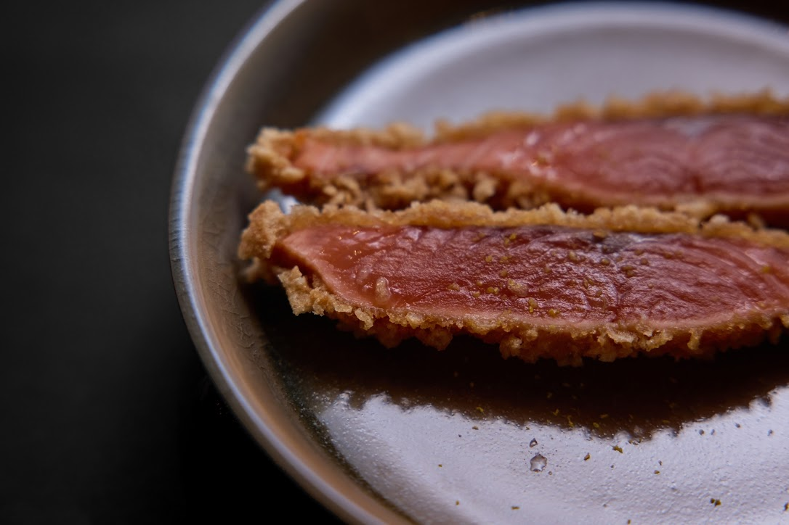

こだわり

毎朝豊洲市場から仕入れる鮮魚や、産地直送のエゾシカなど、選りすぐりの食材を使った日本料理をご提供しております。土鍋で炊き上げるご飯には、上品な甘みと香りが特徴の山形産の「つや姫」を使用。お食事と一緒にご堪能いただくお酒は、季節の日本酒や厳選した焼酎を幅広くご用意しました。旬の食材で織り成す季節の料理と合わせてお愉しみください。店内は、接待、記念日、デートなどに最適な上質感漂う隠れ家のような空間。


ご挨拶

店主 地曳 翔太
15歳から料理の道へと進み、都内の日本料理、ミシュラン3つ星の京懐石 吉泉 ～ 銀座 子熊・Kuma3副料理長を経験し、蒲田西口にて独立致しました。
自身が人に、仕事に心を尽くせる場所そんなお店ができればと思ってます。
なんだかんだ
【今日美味い酒がのめるか】
【一日作さざれば一日食らわず】って事です。

和食 巴 ともえ - Tomoe
{{ post.timestamp | date : 'shortDate' : 'JST'}}
{{ post.timestamp | date : 'shortDate' : 'JST'}}
{{ post.caption }}